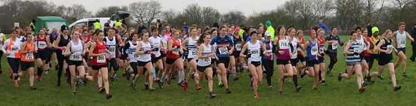

Six Sevenoaks AC runners competed at the Kent County AA Cross Country Championships at Brands Hatch on 9 January 2016, the county's top XC competition of the season.
In the senior men's race over 12k, Andrew Mead finished in 94th position, closely followed by four clubmates as follows:
94 651 Andrew Mead 00:53:49 Male M45 Sevenoaks AC
98 652 Edmund Saunders 00:54:29 Male SM Sevenoaks AC
148 650 Nick Humphrey-Taylor 01:00:17 Male M40 Sevenoaks AC
157 649 Andrew Evans 01:01:46 Male M45 Sevenoaks AC
168 653 Marc Thatcher 01:03:22 Male M40 Sevenoaks AC
The race was won by John Gilbert of Kent AC, while the six-to-score men's team race was won by Tonbridge AC.

The other Sevenoaks AC runner contested the senior women's race over 8k. Anna Humphrey-Taylor was 79th in a race won by Tonbridge AC's Ashley Gibson. Anna's result was:
79 846 Anna Humphrey-Taylor 00:48:29 Female W45 Sevenoaks AC
Tonbridge won the three-to-score team race ahead of Paddock Wood.
The full results can be found here.